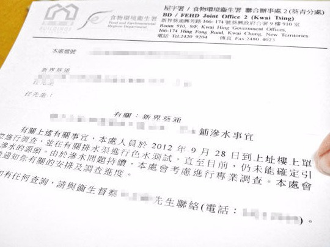

滲水辦的成立目的及背景

滲水辦成立的目的是為了解決樓宇漏水問題。通過法例賦予的權力和專業知識，滲水辦能夠與業主和住戶合作，採用系統化的漏水檢測方法找出漏水源頭，確保業主進行必要的漏水維修，徹底解決漏水帶來的困擾。

可以根據《公開資料守則》用申請表格提出要求。由於所索取的資料並非免費提供的刊物，有關申請會收取以下的複印費用：
• 黑白複印 每張5.2元
• 彩色複印 每張6.5元
| 滲水辦聯絡信息 | 滲水辦電地址 | 滲水辦電話 |
|---|---|---|
| 大埔區滲水辦： | 新界大埔鄉事會街8號大埔綜合大樓3字樓 | 3183 9119 |
| 沙田區滲水辦： | 新界沙田鄉事會路138號新城市中央廣場第1座12字樓 | 2634 0136 |
| 西貢區滲水辦： | 新界將軍澳培成路38號西貢將軍澳政府綜合大樓8樓 | 3740 5100 |
| 北區滲水辦： | 新界上水智昌路13號石湖墟市政大廈4字樓 | 2679 2812 |
| 香港區滲水辦： | 香港黃竹坑業勤街23號9樓 | 3691 8479 |
| 九龍區滲水辦： | 九龍灣宏光道39號宏天廣場21樓7B-10A室 | 3156 1942 |
| 新界西滲水辦： | 新界荃灣沙咀道6號嘉達環球中心26樓 | 3150 8370 |